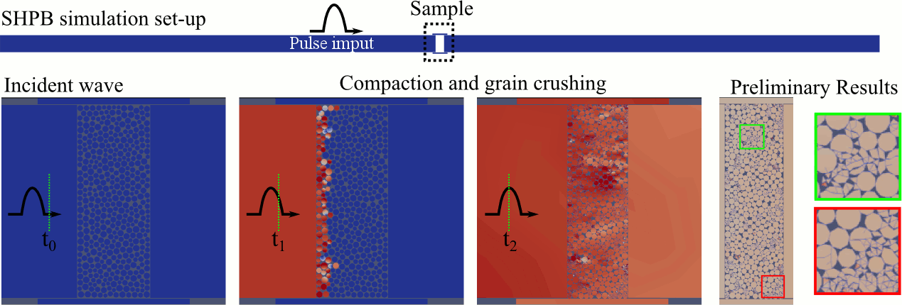
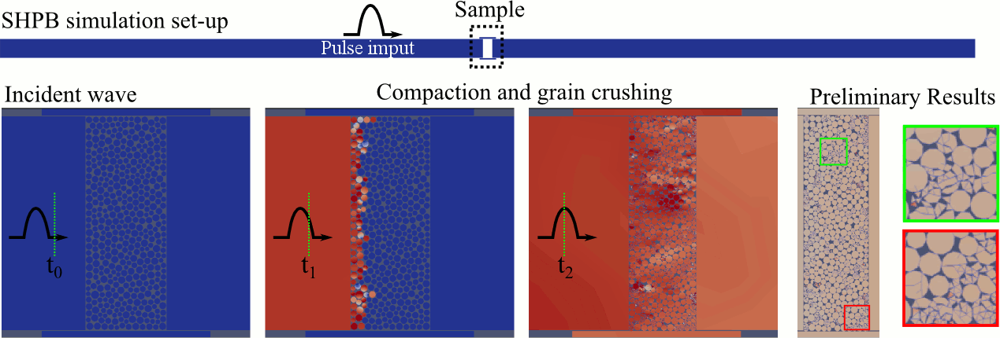

Numerical investigation of progressive
damage and associated seismicity on a laboratory fault
Q. Zhao, N. Tisato, A. Abdelaziz, J. Ha, G. Grassell
Under quasi-static shear loading, the fault surface experiences local dynamic seismic activities.
We found that the seismic activity is related to the stress concentration on interlocking asperities.
This interlocking behavior (i) causes stress concentration at the region of contact that could reach
the compressive strength, and (ii) produces tensile stress up to the tensile strength in the region adjacent to the contact area.
Thus, different failure mechanisms and damage patterns including crushing and sub-vertical fracturing are observed on the rough surface.
Asperity failure creates rapid local slips resulting in significant stress perturbations that alter the overall stress condition and may trigger the slip of adjacent critically stressed asperities.


 
